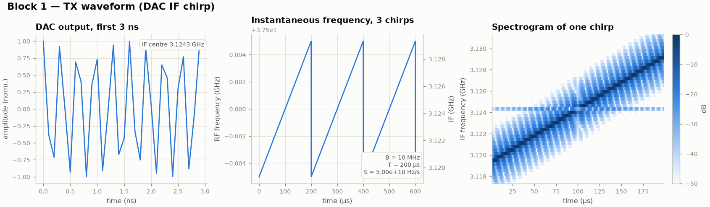

A1แผนความถี่และ chirp ที่ส่งออก
\[ f_{LO} = 4\,N f_{ref} = 4 \times 1119 \times 7.68\ \text{MHz} = 34.37568\ \text{GHz}, \qquad f_{RF}(t) = f_{LO} + f_{IF}(t) \]
\[ s(t) = e^{\,j\varphi(t)},\qquad \varphi(t) = \pi S t^2 - \pi B t,\qquad S = \frac{B}{T} = \frac{10\ \text{MHz}}{200\ \mu\text{s}} = 5\times10^{10}\ \text{Hz/s} \]
\[ u_{DAC}(t) = \cos\!\big(2\pi f_{IF}\,t + \varphi(t)\big),\qquad f_{IF} = 37.5\ \text{GHz} - f_{LO} = 3.12432\ \text{GHz} \]
\(s(t)\) คือ complex envelope ของ chirp (ความถี่ขณะหนึ่งกวาดจาก −B/2 ถึง +B/2) ทุกสมการด้านล่างเขียนในรูป envelope นี้ ส่วนความถี่พาหะจะแยกเขียนเป็น \(e^{j2\pi f t}\)
